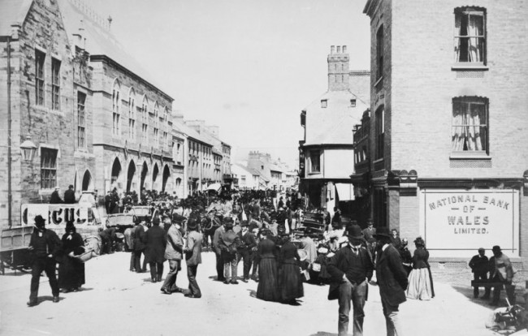
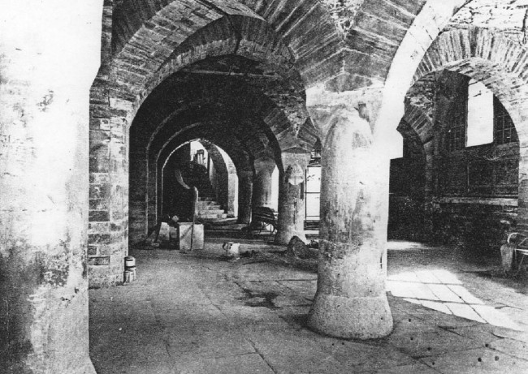
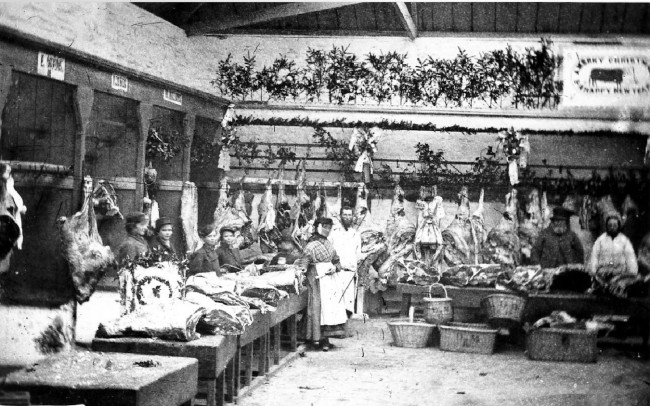
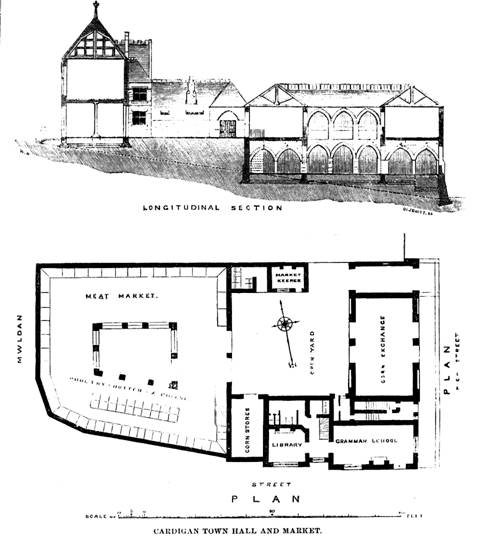

In the early 1800s, markets in Cardigan were held in the open streets. Food such as meat and milk was sold outside without much protection from dirt, animals, or insects. Animals were sometimes killed where they were sold, and waste was left in the streets. As the town grew, this caused serious problems with cleanliness and health.
In 1822, a local baker and publican named William Phillips built a small market hall and slaughterhouse in Mwldan. He rented it to the town for a small yearly fee. However, the building was soon too small, and traders returned to selling goods in the streets. To improve conditions, the Town Council introduced rules in 1836 to keep the market cleaner, with fines for people who did not follow them.
By the 1850s, Cardigan had become an important market town, but it still did not have a large enough market building. In 1855, the Council asked for legal advice and decided that a new market and public building could be created through an Act of Parliament. Although some people objected, the plan went ahead after compensation was paid.
A new site was chosen at Free School Bank, near the old North Gate. Plans were approved in 1856, and permission was officially granted in 1857. The new buildings, including the Market Hall and Guildhall, opened in July 1860. A new slaughterhouse was also built further away from the town centre to improve hygiene.
The market building had two main levels. The upper floor was used to sell meat, poultry, butter, and cheese. The lower floor was used for selling live animals, which were then taken to the slaughterhouse nearby.
The building is important because of its design. It was one of the first public buildings in Britain built in the “modern Gothic” style supported by John Ruskin. It also includes some Middle Eastern design features, especially in the arches. The lower level has a darker, more medieval look with stone columns and arches, while the upper level is lighter, with large windows and a glass roof.
Some changes were made to the building in 1969, including adding a central staircase. However, it has continued to be used as a market since it first opened in 1860.
In more recent years, the market has continued to play an important role in the town, although the way it is used has changed. Traditional livestock trading has declined, and the building is now used more for local produce, crafts, and small businesses. Efforts have been made to preserve the historic structure while adapting it for modern use. Today, the market remains a key part of Cardigan’s community, attracting both local residents and visitors, and helping to support the local economy while maintaining its historical importance.



